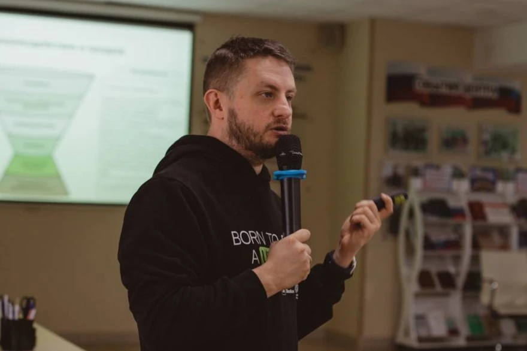

Драйверы успешной рекламы
Запись и конспект практикума
Обо мне
Я — стратегический маркетолог, 15 лет в стратегическом маркетинге и управлении продажами. Работал в банке Абсолют, российской Coca-Cola, на заводе Тяжмаш, в сети Корстон и других компаниях. Работаю либо директором по маркетингу, либо коммерческим директором.
С 2015 года занимаюсь образованием: эксперт фонда Сколково, академический директор РАНХиГС в Москве (возглавляю программу в магистратуре по маркетингу).
Последние 10 лет активно консультирую малый и микробизнес. На базе этого опыта создал собственную методологию ZMS — здоровая маркетинговая система — трек того, как должен работать с маркетингом микробизнес. Методология работает только для микро- и малого бизнеса, в корпорациях не применяется.
Контекст практикума
Практикум посвящён оранжевому блоку в моей системе маркетинга — лидогенерации, запуску рекламы, привлечению лидов. Синий блок — это стратегия, стратегический маркетинг. Без стратегии запускать рекламу нельзя. Реклама работает только в связке со стратегией.
Три кита успешной рекламы
Успешная реклама базируется на трёх китах, и все они находятся не в оранжевом блоке (реклама), а в синем (стратегия). Если хотя бы один элемент не проработан — гарантированный слив бюджета.
Это не вопрос того, насколько качественного контекстолога вы найдёте. Не вопрос того, какие галочки таргетолог проставил в рекламе ВК. Если вам (не вашему маркетологу, не фрилансеру) непонятна досконально ваша ЦА, непонятны конкуренты и нет уверенности, что продукт в рынке — будет слив бюджета.
Кит 1: Целевая аудитория
Целевая аудитория — это люди, сгруппированные не по демографии («мужчина 25–40 с высоким уровнем дохода» — так не надо делать), а по общей проблеме, общей боли. В один сегмент могут попасть и мужчины, и женщины, и 15 лет, и 70 — потому что триггер принятия решения общий.
Чем глубже вы понимаете свою целевую аудиторию, тем точнее ваша реклама. Ключ к успешной рекламе — пристроиться к психологии вашего потребителя.
Кит 2: Конкуренты
Конкуренты — это источник данных. Анализируя конкурентов, мы уберегаем себя от тех же граблей. Смотрим их оферы, форматы рекламы, креативы, смыслы, что они обещают. Делаем тайного покупателя, говорим с их отделом продаж.
FTL — Follow the Leader (следуй за лидером) — рекламная стратегия, когда мы смотрим, как работает крупный конкурент, и просто копируем его подход. Если рынок достаточно большой — свой кусочек отхватим.
Типичный «анализ конкурентов» — табличка с адресами сайтов и ценами. Это бесполезно. Нужно смотреть их рекламу, креативы, смыслы, разговаривать с их отделом продаж через тайного покупателя.
Кит 3: Продукт
Даже идеальная реклама не спасёт слабый продукт. Если нет чёткого ценностного предложения — той пользы, которая выражена не в технических характеристиках, а в клиентских характеристиках — реклама работать не будет.
Люди покупают не дрель — люди покупают отверстие. Люди покупают не кофемашину, а возможность бодрого, свежего утра, как будто ты в кофейню пришёл.
Если клиент «круглый», а продукт «треугольный» — мы не можем сделать продукт круглым. Но мы должны этот треугольный продукт хотя бы упаковать в круглую упаковку, чтобы клиент его «выкупил». Это и есть упаковка продукта — не про изменение производства, а про смыслы, которые мы выдаём.
Реклама — это про смыслы
В теории рекламы есть понятие «единица смысла». Реклама — это единица смысла маркетинга бизнеса. Что я говорю на рынок, чтобы меня покупали?
Клиенты в любой сфере любят, когда с них снимают ответственность, когда выбор как будто бы делают за них. Не «вот курс по маркетингу, сам реши, зачем тебе» — а «приходи ко мне, и через 2 недели будут первые клиенты. За счёт чего? Я тебя маркетингу научу».
Пересечение трёх осей
Максимальная эффективность рекламы появляется на пересечении трёх осей:
Что у них реально болит, какие смыслы мы вытащили
Что у них не так, чем клиенты недовольны
Что мы реально можем дать
Додо Пицца. Фёдор Овчинников вытащил смысл: все хотят, приходя домой с работы, поужинать через час, а не через три. Звонишь в доставку — «будете ждать 2,5 часа, пробки». Первая рекламная кампания: «Привезём за час или пицца бесплатно». Атака на боль аудитории, а не описание состава теста.
Принцип «Фрустрируй, потом продавай»
Продать проще всего человеку, который фрустрирован. Показал, что у него что-то не то, угадал его проблему, угадал его боль — и он готов покупать решение.
Реклама фармацевтики. Сценарий: встали утром, сильно болит горло, подбегает ребёнок, вы обещали погулять, но вам плохо. «Верно, мы вас понимаем?» — «Да, это про меня». Потом: выпиваете нашу микстуру — и через час бежите с ребёнком играть в хоккей.
Фрустрация в B2B. Приходишь к клиенту: «Сколько у вас лидов в месяц?» — «120». — «Ой, 120 в вашей сфере? Это не очень хорошо работает. Обычно от 300». В B2B работает отлично.
Мой личный кейс. Я слил $20 000 клиентских денег на рекламу в США из-за ошибок в стратегии. Было меньше опыта тогда — и это подтверждает, что без стратегического фундамента реклама не работает.
Модель АИДА
АИДА — классическая модель построения рекламы, воронка, ведущая человека к покупке. Разработана в конце XX века группой маркетологов совместно с двумя психологами. Базируется на человеческой психологии.
Привлечь внимание
Вызвать интерес к продукту
Вызвать желание купить
Побудить к действию
Почему АИДА до сих пор работает? Потому что психология у нас за последние 40 лет не изменилась ни на йоту. Все инстинкты, рефлексы, глубинная психология — всё на месте. Зумеры, альфа, теория поколений — это «смешные настройки» по сравнению с тем, что в глубине подсознания. Большая часть провалов в рекламе — когда пропускается один из этапов АИДЫ.
Attention — привлечь внимание
Фокус внимания среднестатистического человека уходит за 3 секунды. Если за 3 секунды не заинтересовался — листаю дальше. Цель этапа в XXI веке — остановить скролл. Здесь про продажу ещё даже речь не идёт — надо, чтобы рекламу в принципе заметили.
Появились трейлеры к трейлерам: сначала 15-секундный ролик, показывающий, что трёхминутный трейлер будет интересным. Рекурсивно, смешно, но факт — внимание уходит мгновенно.
Лучше внимание привлекают: провокация, неожиданный факт, визуальный контраст (всё яркое — и вдруг чёрно-белое минималистичное пятно, или наоборот).
Стоп-слова, которые убивают внимание: «мы команда профессионалов», «надёжный и качественный», «по выгодной цене», «индивидуальный подход». Как только видим что-то вылизанное, стандартное — внимание уходит.
Interest — вызвать интерес
Человек должен подумать: «Это про меня». Здесь надо фрустрировать — показать конкретный кейс, конкретную историю. Отлично работает сторителлинг: не абстрактные фразы, а конкретная история про конкретного клиента с именем, фоткой, проблемами. Это работает лучше, чем «обычно наши клиенты в среднем...»
Нейросети могут собирать АИДУ, но ~75% того, что собирают нейросети — это их фантазии, не базирующиеся на реальных данных, на реальных болях клиентов. Нужно аккуратно проверять и фильтровать.
Desire — вызвать желание
Желание появляется, когда я вижу образ результата — как продукт изменит мою жизнь. Мы создаём у клиента образ будущего.
Автосалон. Менеджер на тест-драйве: «Чувствуете, как сиденья вас обнимают? Давайте музыку включим — какой бархатный звук!» Рассказывает о продукте так, как будто ты им уже владеешь.
Риэлтор. Показывает квартиру: «Вот панорамное окно. Видно детскую площадку. Я вижу, у вас дети — будете смотреть, как они играют». Не «комнаты просторные, потолки высокие», а образ будущей жизни.
Желание усиливается через триггеры. Самый мощный триггер — ограниченность: «последний запуск в этом году», «только 10 мест», «цена растёт каждую неделю». На самом деле ограничения может и не быть, но ощущение создаётся. Так работает психология — мозг включает рефлекс.
Action — побудить к действию
Call to action — призыв к действию. Клиент должен уйти с чётким пониманием, что надо дальше делать: «запишись на бесплатный аудит», «запишись на звонок на 15 минут».
Это не просто шаблон — это пристройка к логике мышления клиента. С 2014 года B2B превратился в H2H — human to human, человек продаёт человеку. Психология работает и там — срочность, триггеры, всё то же самое. Люди иррациональны, даже в рациональных структурах.
11 манипуляций в рекламе
Для усиления АИДЫ в рекламе используются манипуляции. Их больше сотни. Я разберу 11.
- Чарующая девятка. Ценовой приём, при котором цена заканчивается на 9: 9990 вместо 10 000, 599 вместо 600. Работает эффект левого разряда — мозг считывает первую цифру. 9990 воспринимается как «9 тысяч», а не «почти 10». Повышает конверсию на 7–18%.
- Ограниченность. «Только сегодня», «осталось 7 мест». FOMO — страх упущенной выгоды. Ускоряет решение о покупке.
- Социальные доказательства. «Нас выбрали 3 200 клиентов», «100 положительных отзывов». Если другие купили — значит, безопасно. Никто не хочет быть первым, но быть двенадцатым уже нормально.
- Авторитет. Блогеры, медийные персоны, сертификаты, членство в ассоциациях. На подростковую аудиторию работают медийные персоны. На зрелую — сертификаты, экспертный статус, «погоны».
- Контраст. Обычная цена 19 990, сегодня 9 990 — «потому что чёрная пятница». На самом деле себестоимость 8 000, но контраст создан.
- Якорение. Сначала называем высокую цену (900 000 руб.), потом «облегчённый вариант» за 90 000. Первый якорь формирует ощущение ценности.
- Простота. «Без сложных настроек», «разберётся даже новичок», «в три шага». Мозгу нравится, когда не будет сложно.
- Срочность. Таймеры, дедлайны, повышение цены каждую неделю. Создание дедлайна триггерит к покупке.
- Страх потери. Люди сильнее боятся потерять, чем хотят приобрести. Не «получите 10 клиентов», а «вы теряете 5 клиентов в год, пока к нам не подключились».
- Эксклюзивность. «Закрытый клуб», «только по приглашению», «по секретной ссылке». Работает даже на любопытство: «а я вхожу в эту элиту?»
- Взаимность. Бесплатный вебинар, консультация, пробный период. Получив ценность, человек гораздо легче идёт на покупку.
Лучше всего: инфопродукты, образовательные курсы, e-commerce, маркетплейсы, подписные сервисы, тарифы IT-продуктов.
В B2B работает хуже. В премиум-сегменте работает в минус — клиент чувствует, что его «сравнивают с теми, кто по акциям покупает».
Не собирайте Франкенштейна — не используйте все манипуляции сразу. Подбирайте 2–3 инструмента под целевую аудиторию. Не зная ЦА, будете рандомно фигачить манипуляции через нейросети — ничего работать не будет.
Клиентское путешествие (Customer Journey Map)
Чтобы эффективно запускать рекламу, нужно понимать, как мыслят клиенты. Для этого выстраивается Customer Journey Map — карта клиентского путешествия: путь клиента от первого касания до повторной покупки, на базе данных и интервью с клиентами.
Реклама не работает изолированно. Она в центре цепочки — между продуктовой историей / PR и финальными продажами. Эффективность рекламы — это эффективность изучения всего клиентского путешествия.
Классическое клиентское путешествие (я выделяю 5 этапов; фактически описано 6):
Клиент ещё продукт не ищет, но чувствует дискомфорт
Клиент начинает искать варианты. Важно: запускать рекламу там, где вас ищут
Выбрал 2–3 варианта, решает, у кого покупать
Решение почти принято, реклама — финальный триггер
Клиент оценивает опыт; если хорош — будет приходить без рекламы
Продать существующему клиенту в 5 раз дешевле, чем найти нового
Фудкорнер в Ростове-на-Дону. Два молодых предпринимателя открыли кафе на фудкорте в торговом центре — сэндвичи, бутерброды, шаурма. Работали в минусе, клиенты не приходили. Запускали таргет в соцсетях и делали посты. Проблема: их ЦА — посетители торгового центра, которые проголодались. Они не поедут есть специально в ТЦ. Они идут ногами на фудкорт. Какие соцсети?
Моя рекомендация: поставить ролл-ап на первом этаже, промоутеров с листовками на втором, яркую вывеску. Предприниматели сопротивлялись: «где новые инструменты маркетинга, что за колхоз?» Результат после внедрения: выручка выросла на 75% за месяц — просто потому что правильно подстроили рекламу к клиентскому путешествию.
Одна реклама для всех этапов. Один креатив на холодную аудиторию, на тёплую, на тех, кто год в Telegram-канале, и на тех, кто видит впервые — не будет конвертировать. Нужно персонализировать: разные креативы под разные этапы и сегменты. «Серебряной пули» — одной рекламы на все времена — не существует.
Тестирование рекламы / ХАДИ-циклы
Реклама — неточная наука. Никто не может с точностью сказать, какая реклама сработает. Тот, кто говорит, что может — врёт. Реклама проверяется только через реальные тесты.
ХАДИ-цикл — метод быстрой проверки рекламы:
«Если запустим этот креатив в Яндексе, получим за 15 000 руб. пять заявок за месяц». Хорошая гипотеза всегда измерима цифрой
Запускаем на маленький бюджет, на маленькую выборку. Не заливаем деньги
Собираем метрики, заданные в гипотезе. Не на основе ощущений!
Сработало → масштабируем. Не сработало → вычеркнули, следующая гипотеза
Выигрывает не тот, кто умнее, а тот, кто перебирает быстрее. Это прямо метод перебора: креатив не сработал — другой креатив; не сработал — другой канал; можно местами поменять.
Понимание стратегии и ЦА сужает список гипотез — с 800 000 до 40 или 20. Быстрее наткнётесь на нужное, потому что знаете, что точно не надо проверять.
Что тестируем: заголовки, визуалы, оферы, call to action, аудитории. Даже мелкие изменения могут дать кратный рост.
Самая главная ошибка — нет тестирования вообще.
Частые ошибки при тестировании:
- Слишком маленькая выборка (4 клика — непонятно, работает или нет)
- Проверяют много гипотез одновременно (непонятно, что сработало)
- Слишком рано делают выводы (запустили в четверг, в пятницу уже «не работает»)
Каждый цикл может снижать стоимость лида, увеличивать предсказуемость и позволяет построить масштабируемую рекламную систему. Сильная реклама — результат не гениального маркетолога, а сотен (ну хотя бы десяточка) маленьких тестов.
B2C реклама
В B2C продают эмоции. По статистике огромного количества исследований, до 95% решений принимаются эмоционально — даже дорогие покупки. Задача рекламы не объяснить, как продукт работает, а вызвать чувство.
Самые сильные драйверы эмоций в B2C: страх потери, принадлежность, радость, желание. Человек должен узнать себя в рекламе — знакомые проблемы, бытовые ситуации.
Сторителлинг с трёхактной структурой (завязка, кульминация, развязка). Есть герой, его путешествие: сначала не понимал, что происходит, болел → купил продукт → перестал болеть. Реклама — это создание сказки, в которую должен поверить клиент. Персонаж должен быть узнаваем. У него проблема, похожая на мою. Есть путь к продукту. Есть результат — как жизнь изменилась.
Визуальные триггеры: цвет, свет, живые эмоции, динамика, крупные планы. Человеческое лицо усиливает доверие в разы — особенно живое, а не глянцевое с фотостока.
Контраст «до/после» — прямо битусишная тема. «Я весил 80 кг, а стал 50». «Вот я грустный 3 месяца назад, а вот я весёлый на Бали». Работает отлично.
В B2C выигрывает тот, кто чувствует аудиторию. Эмоция будет правильной, когда она направлена именно на эту аудиторию — тогда привлекает, запоминается и продаёт быстрее любых рациональных аргументов.
Фальшивые эмоции или B2C реклама без эмоций (рациональная) — не работает.
B2B реклама
В B2B люди покупают более осознанно. Для себя — порадовать, для компании — принести эффективность. Реклама должна показывать цифры, логику, предсказуемость результата, снижать риски. Не надо рекламировать бухгалтерские услуги человеком с чемоданом на пустой дороге — так можно продать кроссовки.
В B2B решают кейсы. Главный страх клиента: «А вдруг именно у меня не сработает?» Нужно доказать, что решение уже работает.
Логика сильного B2B-кейса:
Контекст: компания, размер, отрасль
Конкретная боль с цифрами
Решение
Рост выручки, экономия издержек, экономия времени, рост конверсии
«Клиенту стало гораздо эффективнее работать с маркетингом» — бесполезно. Нужны конкретные цифры: «минус 2 часа работы менеджера в день» вместо «внедрили CRM с 50 функциями». В B2B покупают не процесс, а результат.
В B2B часто приходится продавать три раза: исполнителю, руководителю и собственнику. Разные ЛПР — разные рекламные креативы.
1С в аэропортах. Сейчас во многих аэропортах Москвы реклама 1С: компания S7 работает на базе 1С, и прямо цитата генерального директора S7, что до 1С были проблемы, а теперь нет. Реклама через кейсы известных клиентов — предполагая, что предприниматели много путешествуют и увидят рекламу.
Форматы B2B рекламы: посадочные страницы с кейсами, презентации с кейсами, вебинары и образовательный маркетинг — собираешь людей, рассказываешь полезное, продаёшь экспертизу, потом закрываешь на проект. В B2B верят фактам, а не пустым амбициозным заявлениям. «Мы лучшие на рынке» — в B2C может прокатить, в B2B — нет.
Модель АКА (для B2B)
АКА — апгрейд АИДЫ для B2B:
Клиент должен осознать свою проблему. Фрустрируем: «Вы же понимаете, что из-за отсутствия системного маркетинга вы недополучаете около 5 млн руб. в год прибыли?»
Объясняем логику решения, показываем процесс, убираем сложности
Самый важный этап. Кейсы, цифры, отзывы, сравнения
В B2B это не всегда покупка: аудит, демо, совещание
| Параметр | АИДА (B2C) | АКА (B2B) |
|---|---|---|
| Фокус | Эмоции и импульс | Логика и доказательства |
| Применение | B2C | B2B (стабильнее и предсказуемее) |
| Совместимость | В B2B можно работать и с АИДОЙ, но АКА стабильнее | |
8 частых ошибок в рекламе
- Нет чёткого портрета целевой аудитории. Без него — «фруктово-кефирная реклама»: прикольные улыбающиеся чуваки, «качественно, расправим вам крылья». Не работает.
- Слабый офер. «У нас лучшие условия» — непонятно. «Оставьте заявку» — зачем? «Успейте купить» — без явного ограничения. Слабый офер только отторгает.
- Продажа без прогрева. Особенно в B2B: клиент только осознал проблему — а ему уже «покупай». Без этапов АИДЫ / АКИ конверсии не будет.
- Обман ожиданий. Реклама не соответствует сайту. В рекламе «в три клика решение» — на сайте огромная анкета. Клиент уходит.
- Слишком сложная форма заявки. Каждый лишний клик, каждая лишняя форма снижает конверсию в среднем на 1–2%. Телефон — минус 2%, почта — ещё 2%, галочка — ещё 2%.
- Плохая работа отдела продаж. В некоторых сферах лиды остывают за 15 минут. Не перезвонили — клиент ушёл к конкуренту.
- Фокус на количестве, а не на качестве. «Главное, чтобы больше людей увидело, а там кто-нибудь да купит» — не сработает.
- Нет ХАДИ-циклов, нет тестирования. Без ХАДИ-циклов невозможно представить эффективную работу с рекламой.
Ответ на вопрос аудитории
Вопрос Ильи: Семейный бутик женской одежды в Краснодаре, верхний средний ценовой сегмент, сарафанное радио как основной канал, аудитория — учителя, офисные работники, руководители, директора. Уникальность — хозяйка с первого взгляда определяет 3–4 идеально подходящие вещи. Никогда не запускали рекламу. С чего начать?
Взять последних 10–20 успешных покупателей бутика. Провести с ними интервью по опроснику. На базе ответов построить клиентское путешествие. Когда будет клиентское путешествие — станет понятно, куда смотреть в рекламу: в какие каналы, какие креативы, на какие ограничения давить.